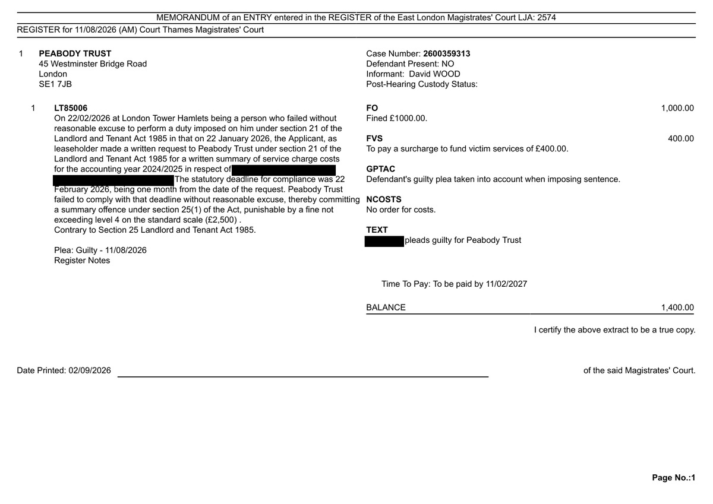
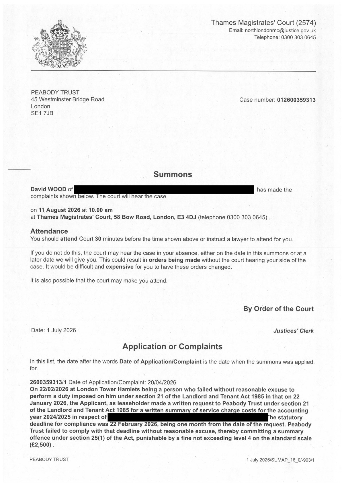

Evidence log
This page publishes primary documents that articles on this site rely on, where they can be published safely. It exists so that a reader does not have to take the site's word for anything that a document can establish directly.
Not everything can go here. Much of the correspondence this site works from contains personal information about residents and staff, and some of it is subject to obligations that prevent publication. Where a document cannot be published, the relevant article names it, dates it and says what it shows. Peabody holds copies of all correspondence referred to on this site.
How documents are prepared
Every document published here is redacted before publication in accordance with the site's practice of not identifying the building or naming individual staff. Redaction is applied by converting the document to an image and removing the text permanently, rather than by covering it in a PDF, where the underlying text usually remains readable. Each entry below states exactly what was removed and why.
Nothing else is altered. No text is added, moved or rewritten.
Peabody Trust: conviction under section 25(1), Landlord and Tenant Act 1985
Peabody Trust pleaded guilty to failing, without reasonable excuse, to perform a duty imposed by section 21 of the Landlord and Tenant Act 1985. It was fined £1,000 with a £400 victim surcharge and no order for costs. The prosecution was brought privately by a leaseholder. The background is set out in Peabody Broke the Law. A Resident Had to Prosecute It.
Memorandum of entry in the court register
{kind=link}

What it establishes. The plea, the date, the offence, the fine of £1,000, the victim surcharge of £400, that the guilty plea was taken into account in sentencing, and that no order for costs was made. It carries the court's certification that the extract is a true copy.
Redactions. The building name, street and postcode are removed, in line with this site's practice of not identifying the building. The name of the person who entered the plea on Peabody's behalf is removed, in line with this site's practice of identifying individuals by role rather than by name. Nothing else is removed. The case number is left visible so that the record can be checked independently.
Summons
{kind=link}

What it establishes. That the court issued a summons on a private application, the date of the complaint, and the wording of the offence alleged. The second page carries only the words "Contrary to Section 25 Landlord and Tenant Act 1985" and is not reproduced.
Redactions. The applicant's home address and the building address are removed. Both case numbers are left visible.
Checking these records independently
Court proceedings are public. Under rule 5.7 of the Criminal Procedure Rules, the register of a magistrates' court, or a certified extract from it, is admissible as evidence of the proceedings recorded in it. Anyone may apply to the court for information about a case under rule 5.8, and journalists may obtain court registers under the arrangements HM Courts and Tribunals Service operates with the news media.
The case number above is sufficient to identify the record. Requests should be made to Thames Magistrates' Court.
Corrections
If you believe anything published here is inaccurate, incomplete or wrongly redacted, please say so. See corrections and right of reply and the corrections log.